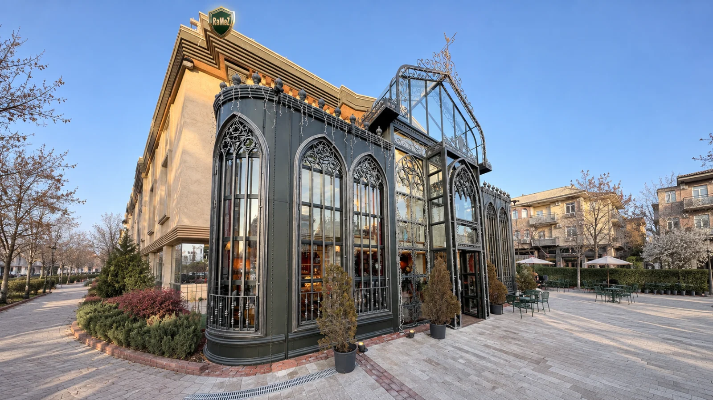

Ornament where it is seen
Concentrate the richest ironwork where the eye falls: the ridge line, the entrance and the elevation facing the garden. Repeat it with restraint elsewhere.

Ornamental ironwork · London
Black & Gold Garden Salon · project photograph
Marla Garden · London
A wrought iron conservatory is defined by its ornament: scrolled panels, cresting along the ridge, finials, brackets and arched glazing bars. We design and make glazed rooms in that tradition for London houses and gardens, with a welded steel frame carrying the glass and decorative ironwork shaped around the proportions of your home.
The decoration should belong to the building rather than sit on top of it. We start with the house, the garden and how the room will be used, then decide where ornament earns its place: a crested roofline seen from the garden, scrolled spandrels at the eaves, or a quieter frame with detail kept to the doors and brackets.
Concentrate the richest ironwork where the eye falls: the ridge line, the entrance and the elevation facing the garden. Repeat it with restraint elsewhere.
The structure is a welded steel frame. The ornament is part of the design, not what holds the roof up, so it can be generous without compromising the structure.
Finished ironwork is ground and sanded smooth, hot-dip galvanised, then primed and painted. The zinc layer sits beneath the colour you see.
Matt black, deep green, cream and grey all suit ironwork. Gilded leaves and finials can pick out the ornament against a dark frame.
Historically, wrought iron was a specific material: iron worked by hand in a puddling furnace, used for Victorian railings, gates and glasshouses. It is no longer produced in commercial quantities, and almost every new conservatory or gate described as wrought iron is made from steel.
We use the term in the way most people searching for it mean it: decorative ironwork in the wrought iron tradition, with scrolls, leaves, cresting and finials. The frame and bars are steel. We would rather say that plainly than describe new work as something it is not.
The structural frame is fabricated from steel sections and welded, with curved members rolled to radius where the design calls for arches or a barrel roof.
Ornamental panels are built inside a flat-bar frame. Scrolls are bent from flat bar, posts can be solid square bar, and leaves, rosettes and finials are cast, so repeated details stay consistent across every bay. Not everything is forged by hand: a mix of shaped bar and cast ornament is how most decorative ironwork is made, and it is how we can keep a pattern identical from one panel to the next.
Every weld and joint is ground and sanded until the surface is smooth, because paint shows every mark underneath it.
Before any colour goes on, the finished steelwork is hot-dip galvanised: dipped in molten zinc so that the coating reaches inside corners, scroll ends and the backs of ornament that a brush or spray would miss.
The galvanised steel is then primed, filled where needed and painted. Typical finishes are matt black, deep green, cream or a muted grey, and the ornament can be gilded or picked out in a contrasting colour. Our Black & Gold Garden Salon shows a matt black frame with gilded detail.
Ornamental ironwork often suits Victorian and Edwardian houses, but a conservatory in a conservation area or attached to a listed building needs its design, materials and colour agreed early. Read our guide to planning for heritage conservatories in London, and for the history behind the style, Gothic and wrought-iron conservatories and how Victorian ironwork shaped modern steel glazing.
Explore the collection
Compare roof forms, glazing patterns and the relationship to the garden. Open a design to explore its details and reference views.
 Curved Conservatories
Curved ConservatoriesDesign collection
A continuous curved glazed roof sits above a dark rectangular conservatory. Tall window divisions and decorative upper panels give the long elevation an ordered rhythm.
Explore the design Classical Garden Pavilions
Classical Garden PavilionsDesign collection
Green glazing bars, a raised roofline and ornamental details establish a recognisable garden pavilion form. The frame reads differently against summer planting, masonry and open sky.
Explore the design Classical Garden Pavilions
Classical Garden PavilionsDesign collection
A pale conservatory is shown within a snow-covered garden, with light visible behind the glazing. The roof edge and tall window pattern establish a classical outline.
Explore the design Classical Garden Pavilions
Classical Garden PavilionsDesign collection
A dark garden room combines a glazed roof with decorative arched panels. A defined entrance sits within a planted approach, with light visible inside.
Explore the design Glazed Verandas
Glazed VerandasDesign collection
A pale glazed veranda runs beside a building and an outdoor dining terrace. Repeated arches and decorative roof-edge details give the long elevation its rhythm.
Explore the design Curved Conservatories
Curved ConservatoriesDesign collection
A generous pale glazed garden structure with repeated tall arches and a broad curved roof. The references place the building within an open lawn and planted borders.
Explore the designLook closer

ClassicA dark conservatory with tall pointed arches, intricate metalwork and a raised glazed entrance roof.
Explore project Classic
ClassicA green conservatory with a sweeping curved façade, tall glazed panels and ornamental roof cresting.
Explore projectClassicA black garden salon with gold ornamental metalwork, decorative railings and a curved interior ceiling.
Explore projectDevelop your project
Compare garden structure designs and bring your preferred references to the design discussion.
Our conservatory cost guide explains the decisions that shape a quotation.
Read the London conservatory planning guide for the questions to check for your site.
Share the setting and your preferred direction to discuss your garden project.
Planning your space
No new conservatory is made from historic wrought iron, which is no longer produced commercially. Our frames and ornament are steel, made and decorated in the wrought iron tradition.
Partly. Scrolls are shaped from flat bar and leaves, rosettes and finials are cast so that repeated details match. The balance between shaped and cast ornament is agreed for each design.
The finished steelwork is hot-dip galvanised before it is primed and painted, so a zinc layer sits underneath the colour, including inside the ornament.
Yes. The frame colour is chosen for each project, and leaves, finials and other ornament can be gilded or finished in a contrasting colour.
Inspect the paint finish from time to time, keep gutters and drainage clear, and touch up any chips promptly so the coating stays intact.
Your next space
Share the setting, the way you want to use the space and the designs you are drawn to.
Plan your project